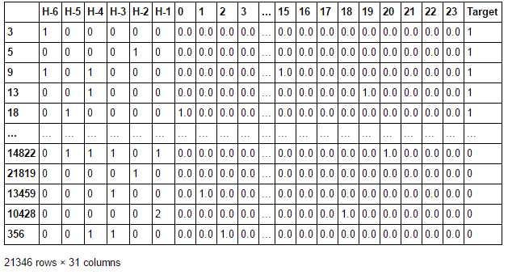
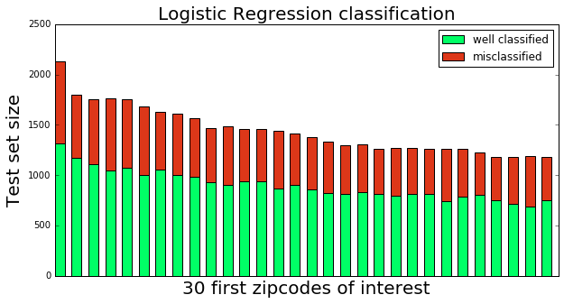
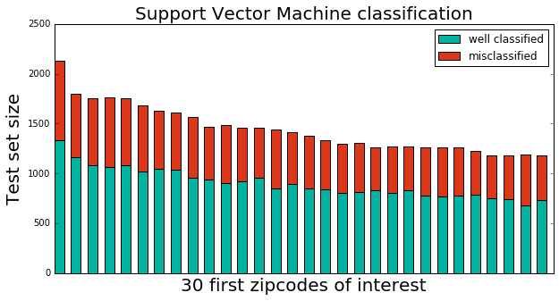

Motor vehicule collisions in the city of New-York
The data are provided by the Police Department (NYPD). This dataset records all the vehicle collisions that happened in New York since July 2012, until March 2017. One row describes one accident, with a lot of different features: date, time, precise location, borough, vehicle types, causes of the collision, number of people injured or killed and their description (pedestrian, cyclist, etc...).
We believe that looking back at all the accidents that have happened in New-York, knowing exactly where it happened, can help a lot in terms of prevention. Indeed a good visualization could greatly assist the police department and give them an insight on where they need to be focused the most. That is why, to go further we worked on our data in order to be able to build a classification model, detailed below.
D3 visualization
First, we get a quick insight into our dataset by visualizing the accidents projected on a map. We will only considered accidents happening in New York in 2015. For each hour of the day (from midnight to 23hours) we group all the accidents of 2015 and display them on the map.
Choose the hour of the day you want to display.
The accidents repartition is very dense in Manhattan as expected, while it is more sparse in the other boroughs. Simple observations
can be done. For example, there are way more accidents during working hours (9am or 18am) than during non-working hours. An other example:
in the early night (around 1am or 2am) it seems to be more accidents in Manhattan, probably because of the
active night life.
The red points correspond to deadly accidents and they are quite spread around the city. Manhattan seems to have
less deadly accidents though.
This map of the accidents give a good insight into the data. You can play around with the hour buttons and start noticing some correlations
between the number of accidents, their repartition and the hour of the day. We will base our analysis upon these observations, and
we will try to predict the probable location of the next accidents.
Aim of the project
Data engineering
For the sake of our analysis, data engineering is very heavy for this prediction. Indeed, we have to gather any set of 6 hours in a row and their associated label. Let's go through the successive steps of our data preparation.
- New hour indexing
- Data engineering (6 hours in a row)
- One hot encoding of the categorical variable
- Dataset balancing
- Train/test separation
Hereafter, an overview of the final dataset we will use for the accidents forecasting. 
Logistic Regression Classification
We want to run a classification task from 30 features: 6 features describing the 6 previous hours of the dataset, as well as the one-hot-encoded category for the hour of the day we are looking at. We applied a Logistic Regression to this dataset, in order to most relevant features here. This method gave us an accuracy of approximately 62 % (details given in the explanatory notebook). Hereafter a visualization of our accuracy on the 30 most populated zipcodes.
Support Vector Machine
We tried to improve our prediction applying support vector machine classification. Though, the results were not better, with still an accuracy around 63 %. We also implemented a lot of other methods such as Adaboost.M1 classifier applied to decision trees (as weak classifier). We also tried K-Nearest Neighbors, Random Forest, as well as some discriminant analysis. Though, SVM were still the best option, despite a very long computation time. Hereafter, our predictions on the 30 most populated zipcodes.
D3 visualization predictions
We are still aiming to apply our machine learning experiments to actual improvement of New-York security. Let's simulate a real-life case and visualize it. We will pick the 30 most accidents-populated zipcodes, and try to simulate a whole day. Predicting from the actual 6 previous hours, we will compare our predictions (hour by hour), and what actually happened on that day. D3 VIZ TO INSERT BELOW